Class MEPCurve
- Namespace
- OpenMEP.Element
- Assembly
- OpenMEP.dll
A class can use for DuctType, PipeType, CableTrayType, ConduitType, WireType, MEPCurveType
public class MEPCurve- Inheritance
-
MEPCurve
- Inherited Members
Methods
BreakCurve(Element, Point)
break mep curve at point
[NodeCategory("Action")]
[NodeSearchTags(new string[] { "split", "cut", "divide" })]
public static Element? BreakCurve(Element mepCurve, Point point)Parameters
mepCurveElementA curve object for duct or pipe blend elements.
pointPointlocation to break on mep curve
Returns
- Element
new element break from mep curve
Examples
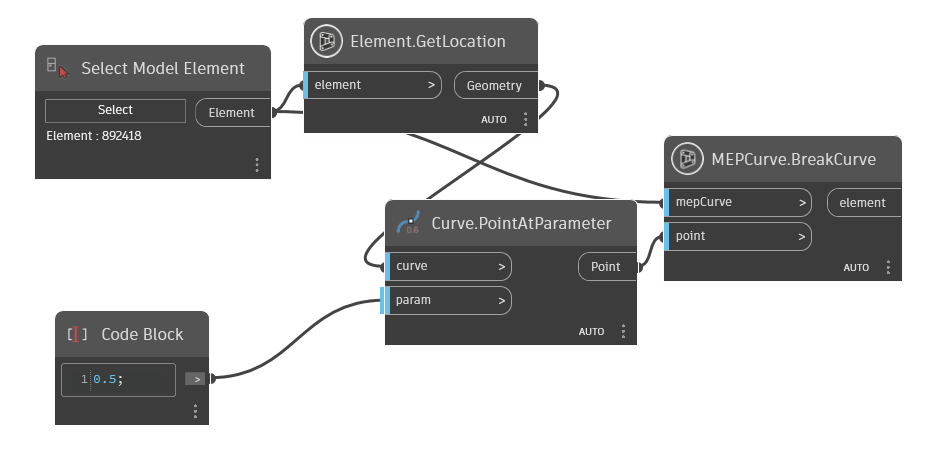
Diameter(Element)
The diameter of the MEP curve.
[NodeCategory("Query")]
public static double? Diameter(Element mepCurve)Parameters
mepCurveElement
Returns
- double?
diameter of mep curve
Examples
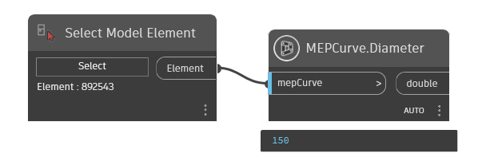
Remarks
This property is used to retrieve the diameter of the MEP curve.
Exceptions
- Autodesk.Revit.Exceptions.InvalidOperationException
Thrown when the MEP curve's Shape is not round.
GetConnectorManager(Element)
The connector manager of this MEP curve
[NodeCategory("Query")]
public static ConnectorManager? GetConnectorManager(Element mepCurve)Parameters
mepCurveElement
Returns
- ConnectorManager
The connector manager of this MEP curve
Examples
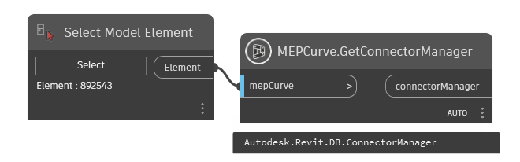
GetFourConnectorsClosest(Element?, Element?, Element?, Element?)
Return four connector closest inside four mep curves
[MultiReturn(new string[] { "Connector1", "Connector2", "Connector3", "Connector4" })]
public static IDictionary<string, object?> GetFourConnectorsClosest(Element? mepCurve1, Element? mepCurve2, Element? mepCurve3, Element? mepCurve4)Parameters
mepCurve1Elementthe first mepCurve
mepCurve2Elementthe second mepCurve
mepCurve3Elementthe three mepCurve
mepCurve4Elementthe four mepCurve
Returns
Examples
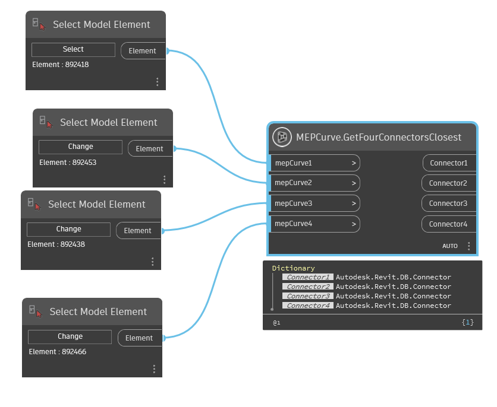
GetThreeConnectorsClosest(Element?, Element?, Element?)
Return three points closest inside three mep curves
[MultiReturn(new string[] { "Connector1", "Connector2", "Connector3" })]
public static IDictionary<string, object?> GetThreeConnectorsClosest(Element? mepCurve1, Element? mepCurve2, Element? mepCurve3)Parameters
mepCurve1Elementthe first mepCurve
mepCurve2Elementthe second mepCurve
mepCurve3Elementthe three mepCurve
Returns
Examples
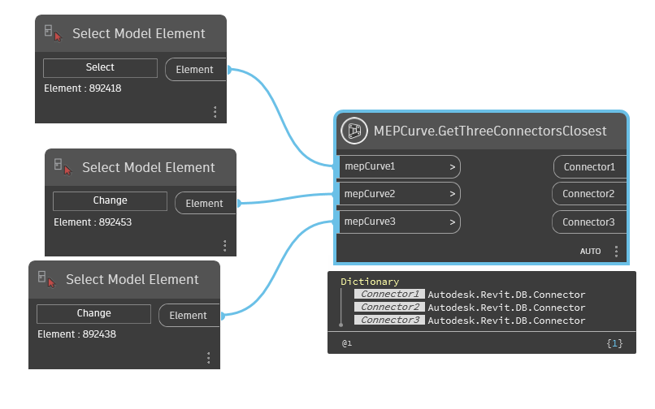
GetTwoConnectorClosest(Element, Element)
return two connectors closet of two pipes
[MultiReturn(new string[] { "Connector1", "Connector2" })]
public static Dictionary<string, object?> GetTwoConnectorClosest(Element mepCurve1, Element mepCurve2)Parameters
mepCurve1Elementthe first mepCurve
mepCurve2Elementthe second mepCurve
Returns
Examples
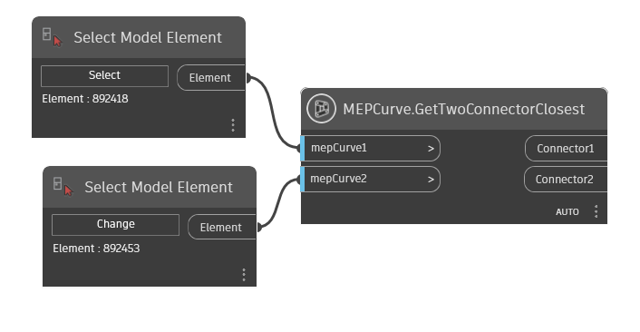
Height(Element)
The height of the MEP curve.
[NodeCategory("Query")]
public static double? Height(Element mepCurve)Parameters
mepCurveElement
Returns
- double?
The height of the MEP curve
Examples
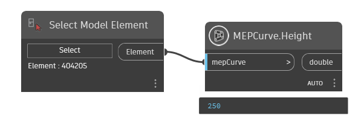
Remarks
This property is used to retrieve the height of the MEP curve.
Exceptions
- Autodesk.Revit.Exceptions.InvalidOperationException
Thrown when the MEP curve's Shape is not rectangular.
LevelOffset(Element)
The offset of the MEP curve.
[NodeCategory("Query")]
public static double? LevelOffset(Element mepCurve)Parameters
mepCurveElement
Returns
- double?
Level offset
Examples
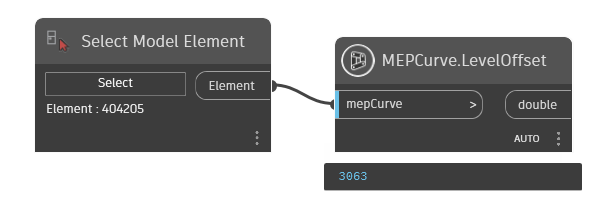
Remarks
This property is used to retrieve the offset of the MEP curve. If the curve is not in a horizontal plane, this value will be the start point's offset.
NewCrossFitting(Element, Element, Element, Element)
Add a new family instance of a tee fitting into the Autodesk Revit document, using four mep curves.
[NodeCategory("Create")]
public static Element? NewCrossFitting(Element mepCurve1, Element mepCurve2, Element mepCurve3, Element mepCurve4)Parameters
mepCurve1Elementthe first mepCurve(Pipe/Duct/CableTray)
mepCurve2Elementthe second mepCurve(Pipe/Duct/CableTray)
mepCurve3Elementthe three mepCurve(Pipe/Duct/CableTray)
mepCurve4Elementthe four mepCurve(Pipe/Duct/CableTray)
Returns
- Element
new cross fitting
Examples
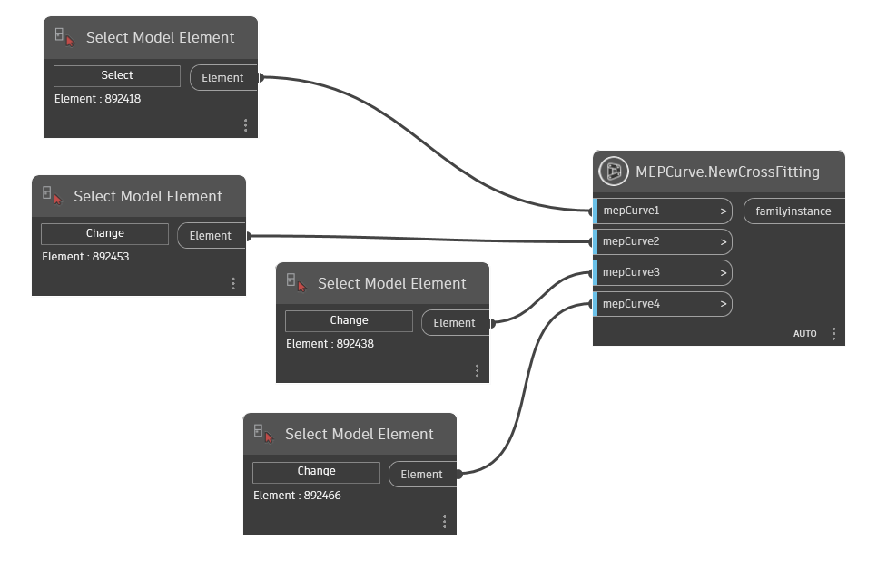
NewElbowFitting(Element, Element)
create a elbow fitting from two mep curve
[NodeCategory("Create")]
public static Element? NewElbowFitting(Element mepCurve1, Element mepCurve2)Parameters
mepCurve1ElementA curve object for duct or pipe blend first elements.
mepCurve2ElementA curve object for duct or pipe second elements.
Returns
- Element
elbow fitting
Examples
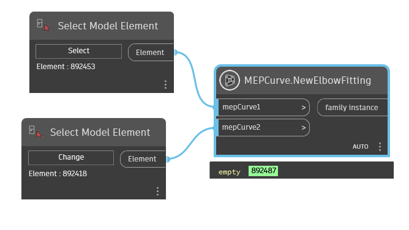
NewTakeoffFitting(Connector, Element)
Add a new family instance of an takeoff fitting into the Autodesk Revit document, using one connector and one MEP curve.
[NodeCategory("Create")]
public static Element? NewTakeoffFitting(Connector connector, Element mepCurve)Parameters
connectorConnectorconnector to be connector
mepCurveElementmepCurve connect to create Takeoff
Returns
- Element
new takeoff fitting
Examples

NewTeeFitting(Element, Element, Element)
Add a new family instance of a tee fitting into the Autodesk Revit document, using three mep curves.
[NodeCategory("Create")]
public static Element? NewTeeFitting(Element mepCurve1, Element mepCurve2, Element mepCurve3)Parameters
mepCurve1ElementA curve object for duct or pipe blend first elements.
mepCurve2ElementA curve object for duct or pipe blend second elements.
mepCurve3ElementA curve object for duct or pipe blend three elements.
Returns
- Element
new tee fitting
Examples
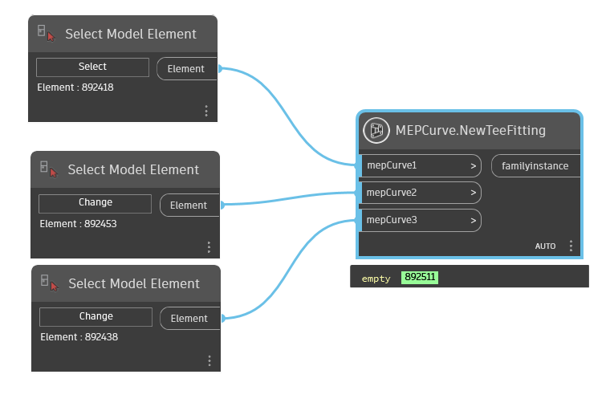
NewTeeFitting(Element, Element)
Create a new tee fitting 90 degrees by two mep curve
public static Element? NewTeeFitting(Element MepCurve1, Element MepCurve2)Parameters
MepCurve1Elementthe first element mep curve
MepCurve2Elementthe second element mep curve
Returns
- Element
the element family instance
Examples
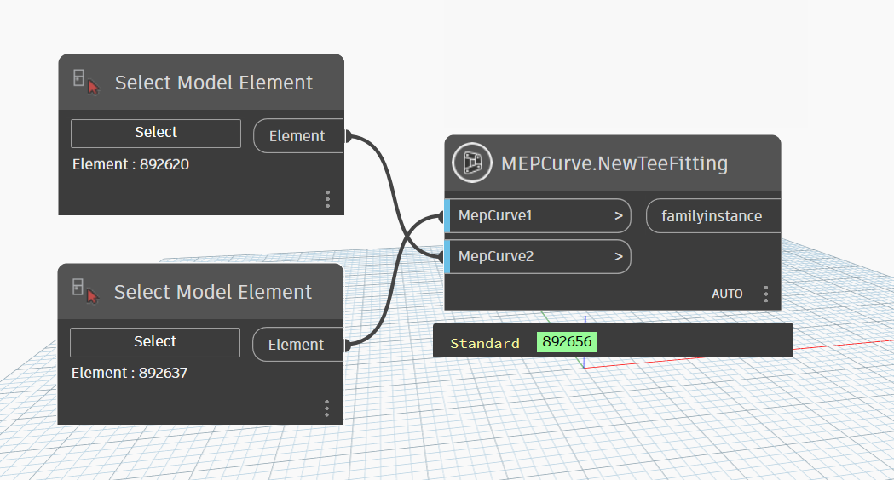
NewTransitionFitting(Element, Element)
Add a new family instance of an transition fitting into the Autodesk Revit document, using two connectors.
[NodeCategory("Create")]
public static Element? NewTransitionFitting(Element mepCurve1, Element mepCurve2)Parameters
mepCurve1Elementthe first mepCurve(Pipe/Duct/CableTray)
mepCurve2Elementthe second mepCurve(Pipe/Duct/CableTray)
Returns
- Element
new transition
Examples
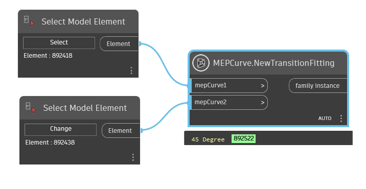
NewUnionFitting(Element, Element)
create a union fitting from two mep curve
[NodeCategory("Create")]
public static Element? NewUnionFitting(Element mepCurve1, Element mepCurve2)Parameters
mepCurve1ElementA curve object for duct or pipe blend first elements.
mepCurve2ElementA curve object for duct or pipe blend second elements.
Returns
- Element
union fitting
Examples
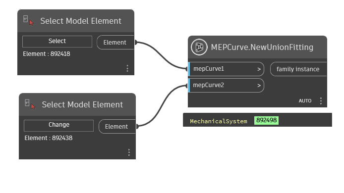
ReferenceLevel(Element)
The reference level of the MEP curve.
[NodeCategory("Query")]
public static Element? ReferenceLevel(Element mepCurve)Parameters
mepCurveElement
Returns
- Element
Examples
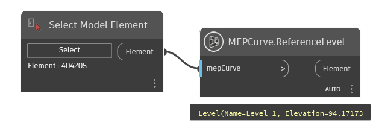
Remarks
This property is used to retrieve the reference level of the MEP curve. If the curve is not in a horizontal plane, this value will be the start point's reference level.
Slope(Element, double)
Return the slope of mepCurve
[MultiReturn(new string[] { "Percent", "Degrees", "Ratio" })]
[NodeCategory("Query")]
public static Dictionary<string, object?> Slope(Element mepCurve, double digit = 0)Parameters
mepCurveElementThe element mepCurve
digitdoubleNumber of fractional digits in the return value
Returns
Examples
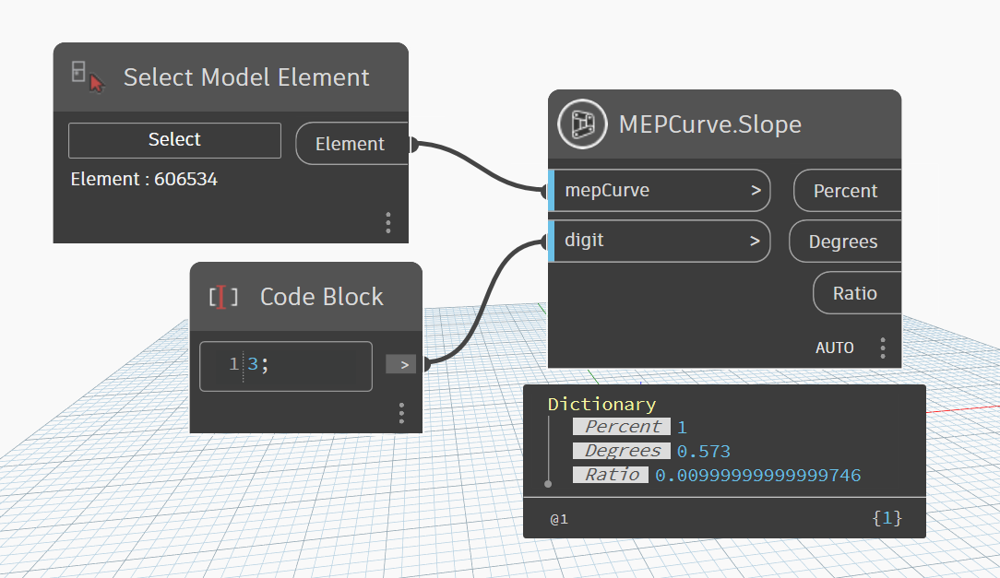
Width(Element)
The width of the MEP curve.
[NodeCategory("Query")]
public static double? Width(Element mepCurve)Parameters
mepCurveElement
Returns
- double?
width of mep curve
Examples
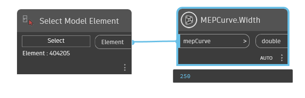
Remarks
This property is used to retrieve the width of the MEP curve.
Exceptions
- Autodesk.Revit.Exceptions.InvalidOperationException
Thrown when the MEP curve's shape is not rectangular.